About 2 min read
Sahar
Reimagining Dr. Sahar Yousef’s website: a self-initiated concept exploring visual storytelling, AI-generated visuals, and motion.
- Role
- Product designer, solo, end to end
- Project
- Self-initiated concept
- Tools
- Claude · Higgsfield · ChatGPT · Vercel
The idea
I came across Dr. Sahar Yousef through her podcast with Raj Shamani and was drawn to her work at the intersection of neuroscience, productivity, and technology.
Her website covers the right ground, but it reads like notes. I wanted to explore how it could reflect the depth of her work and give visitors a reason to stay curious.
My approach
Rethinking the flow
I kept her strong content and made it tighter, cutting repetition. I reordered it around the questions a visitor naturally asks: who she is, what she believes, what she does, why to trust her, and how to work with her.
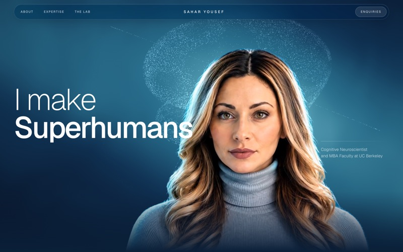
Who she is
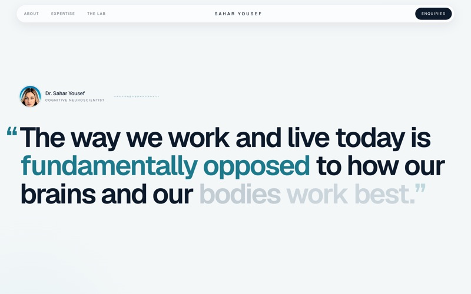
What she believes
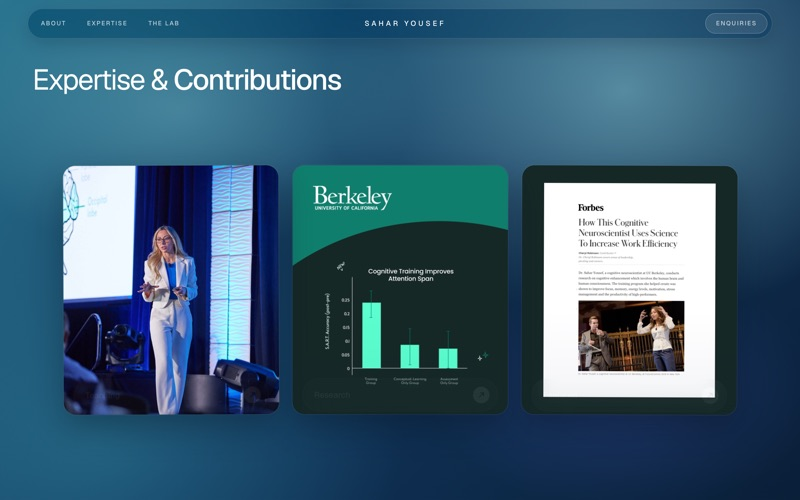
What she does
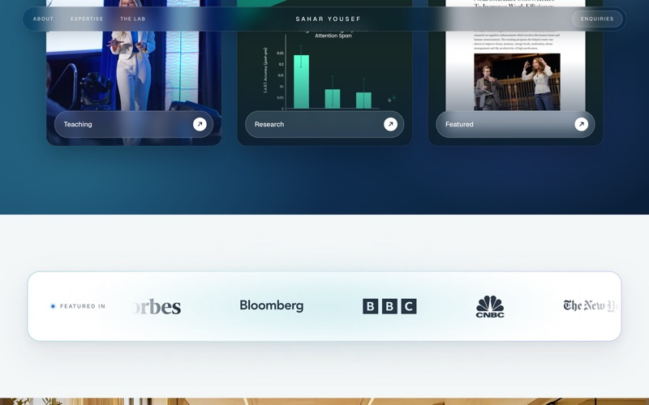
Why to trust her
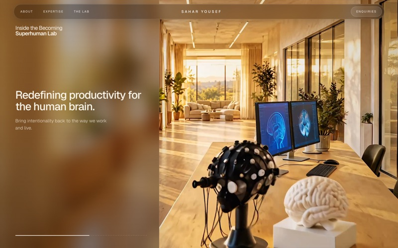
How to work with her
Finding the visual direction
My first directions leaned into neuroscience and felt cold and clinical, the opposite of her. I moved to a light, airy look with a restrained blue accent and subtle neural patterns, so the site signals science while staying warm.
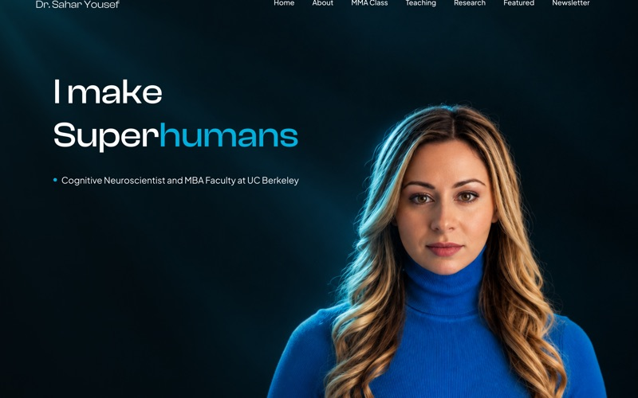
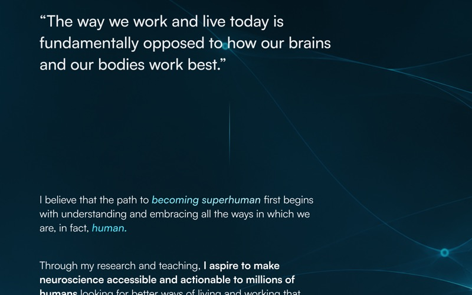
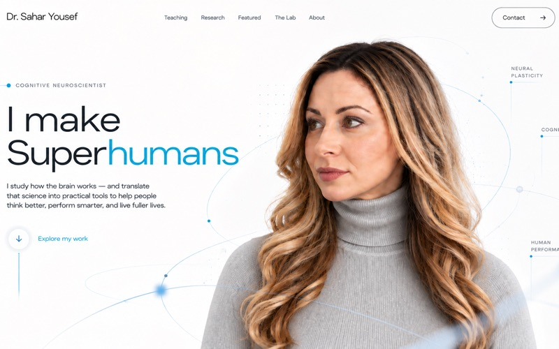
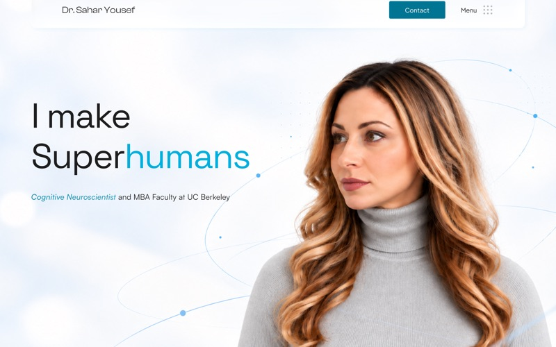
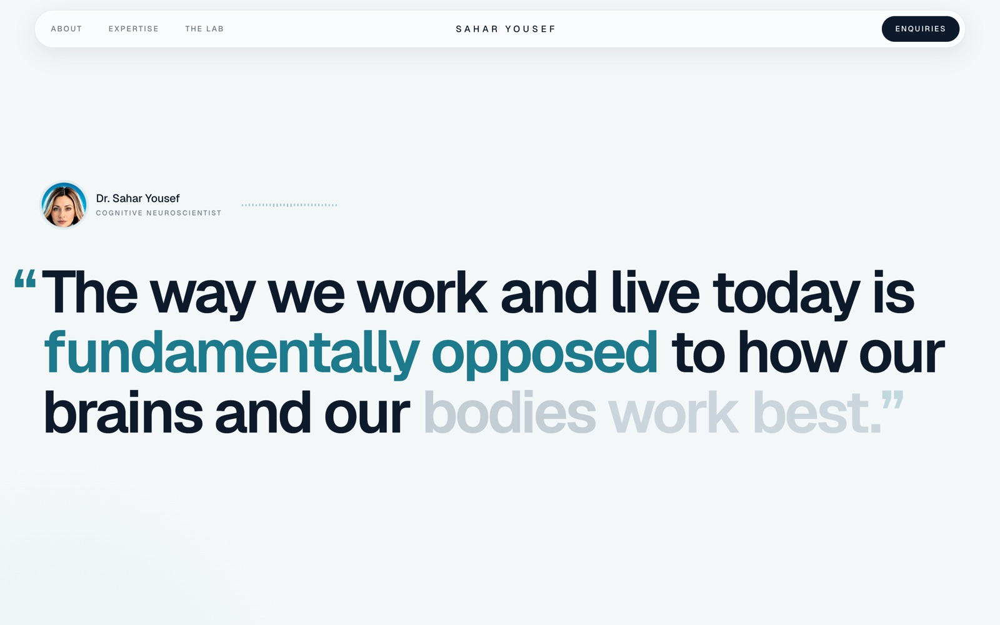
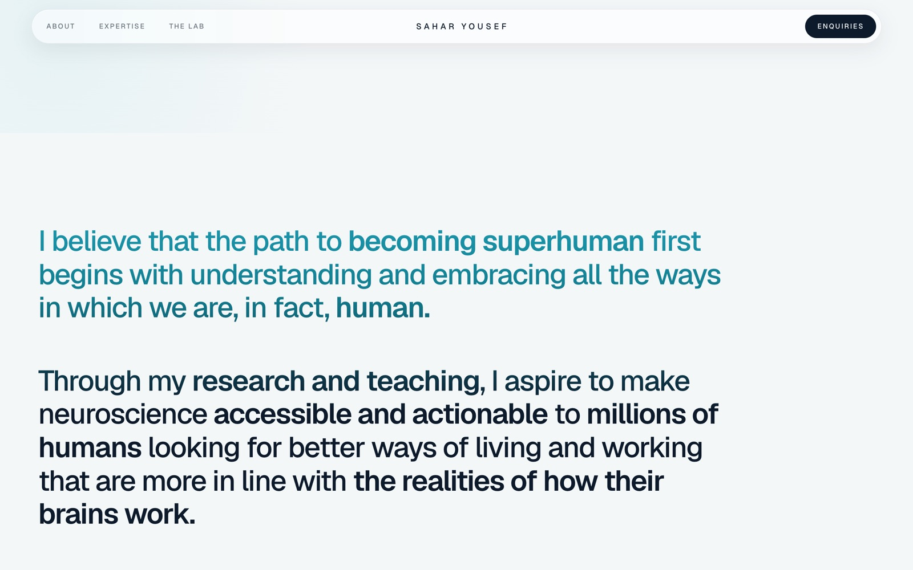
Exploring AI and motion
I used AI tools to generate and refine the visuals, then brought them to life with scroll-driven motion: her profile turns toward the viewer, and a camera tour reveals the lab. Some of the work was correcting the AI. My first backgrounds defaulted to the generic glossy “AI network” look, so I rewrote the direction toward something more organic and brain-specific.
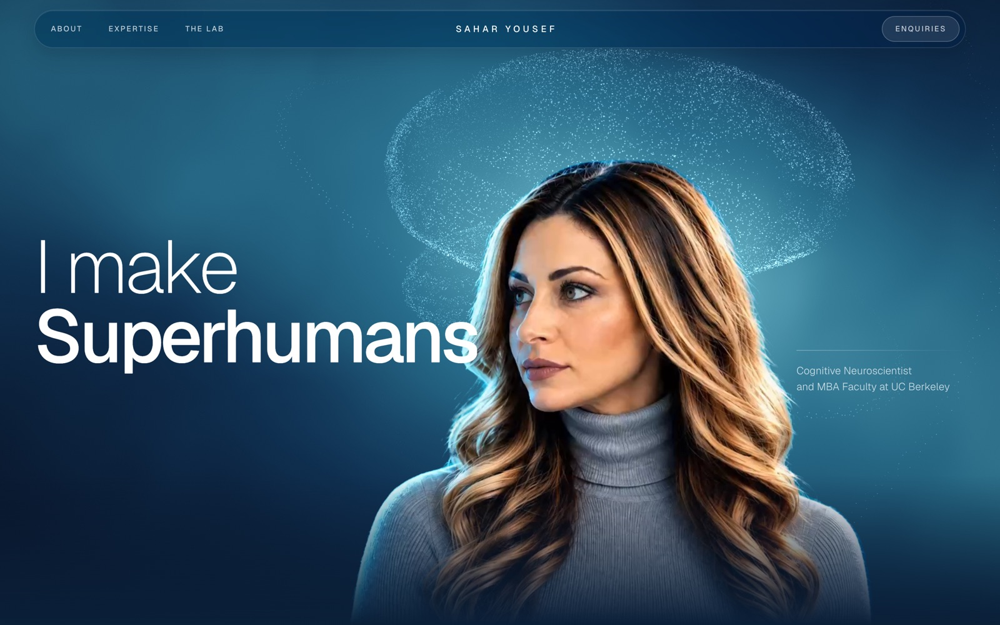
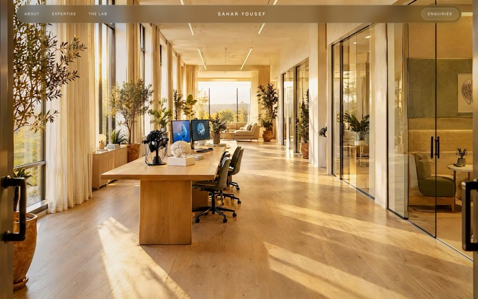
01
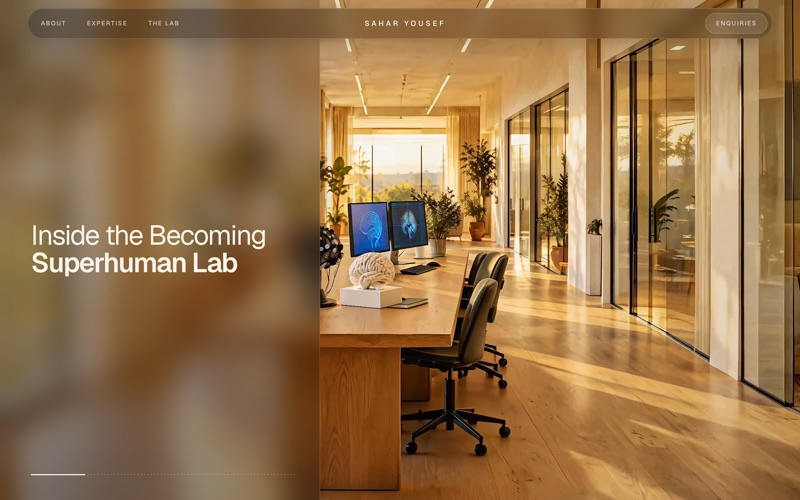
02
03
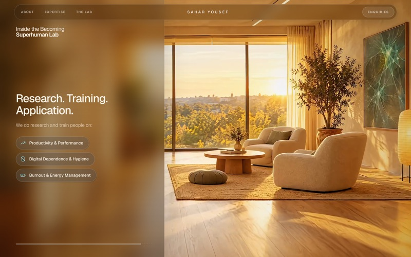
04
Bringing it together
Content, visuals, and interaction come together in one site concept that communicates both the science of her work and its human impact.
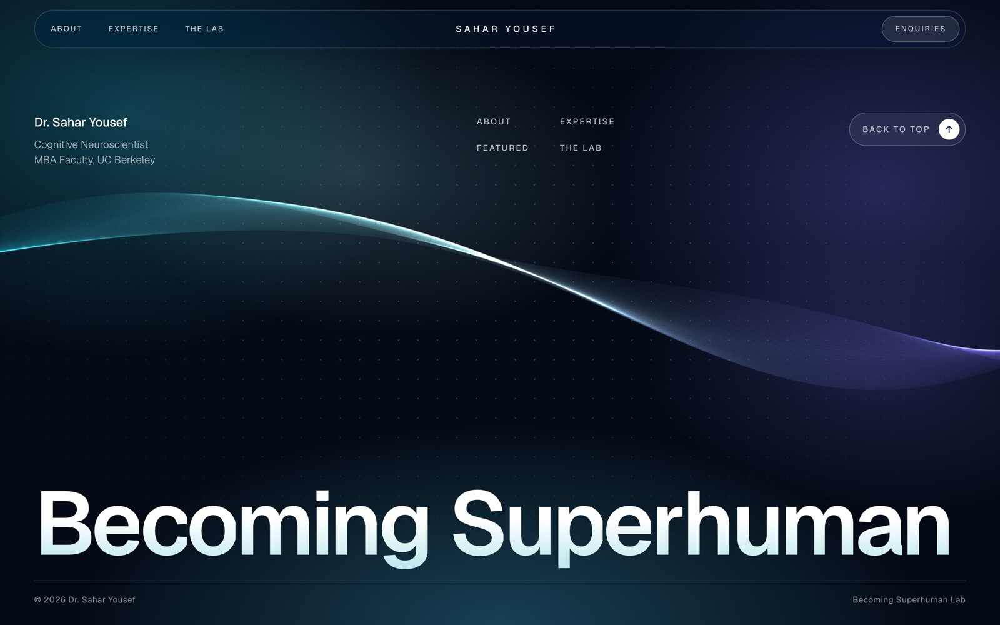
The outcome
A working, scroll-driven concept built solo. More than anything, it was a chance to translate my admiration for someone’s work into a design exploration of my own.
Independent concept, not affiliated with or endorsed by Dr. Sahar Yousef. Her portrait is from her public site; the lab and other scenes are fictional, for demonstration.